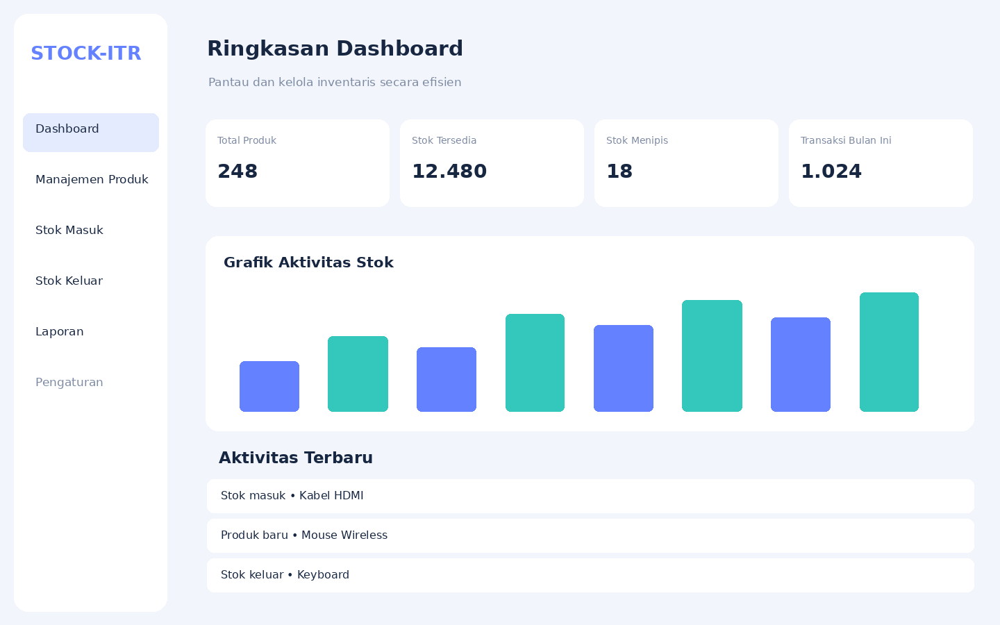
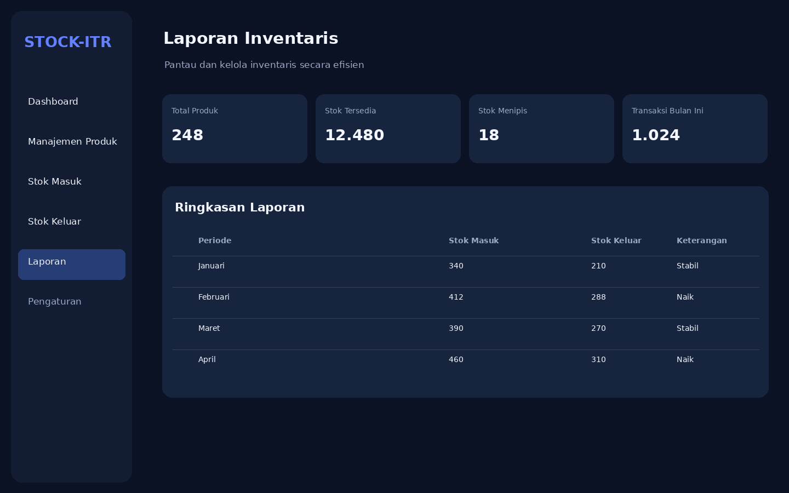
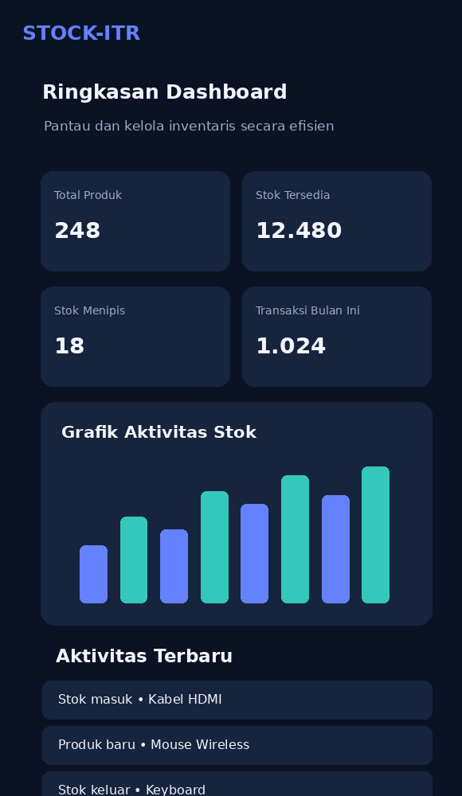

04 / Dokumentasi Visual
Galeri Project
Klik gambar untuk memperbesar. Semua gambar berikut merupakan contoh ilustrasi UI Untuk melihat tampilan asli dari website anda bisa langsung cek di demo aplikasinya.
Dashboard — Dark ModeRingkasan data dan grafik aktivitas.

Dashboard — Light ModeAlternatif tema terang untuk dashboard.
Manajemen ProdukContoh tabel dan daftar barang.

Laporan InventarisContoh ringkasan laporan stok.

Dashboard — MobileContoh tata letak responsif pada ponsel.